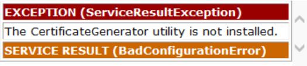

The CertificateGenerator utility is not installed
The CertificateGenerator utility is not installed
"Opc.Ua.CertificateGenerator.exe" file was found at "C:\Program Files (x86)\Common Files\OPC Foundation\UA\v1.0\Bin".

Some more information:
The certificate generator is only need the first time the application is run.
An administrator access with elevated privileges ("Run as administrator") may be necessary this first time.
There is a search algorithm that looks for the utility at multiple places, and this error is thrown if it is not found at any of the locations.
The search algorithm works as follows - and stops at the moment it finds the appropriately named file:
First it looks in the current working directory
It looks in the "Bin" subdirectory of it.
It proceeds to parent directory, and continues with Step 2.
It looks in %CommonProgramFiles%\OPC Foundation\UA\v1.0\Bin
Can you please search your "Program Files" directory for "Opc.Ua.CertificateGenerator.exe", and let me know if it is there, and if so, its full location? If you are on a 64-bit system, it should be under "Program Files (x86)".
- If I manually copy the "Opc.Ua.CertificateGenerator.exe" to %CommonProgramFiles%\OPC Foundation\UA\v1.0\Bin then it starts to work and no error is thrown
- 也可以到UA-.NETStandardLibrary-master里面找到Opc.Ua.CertificateGenerator.exe，直接复制到当前运行目录即可